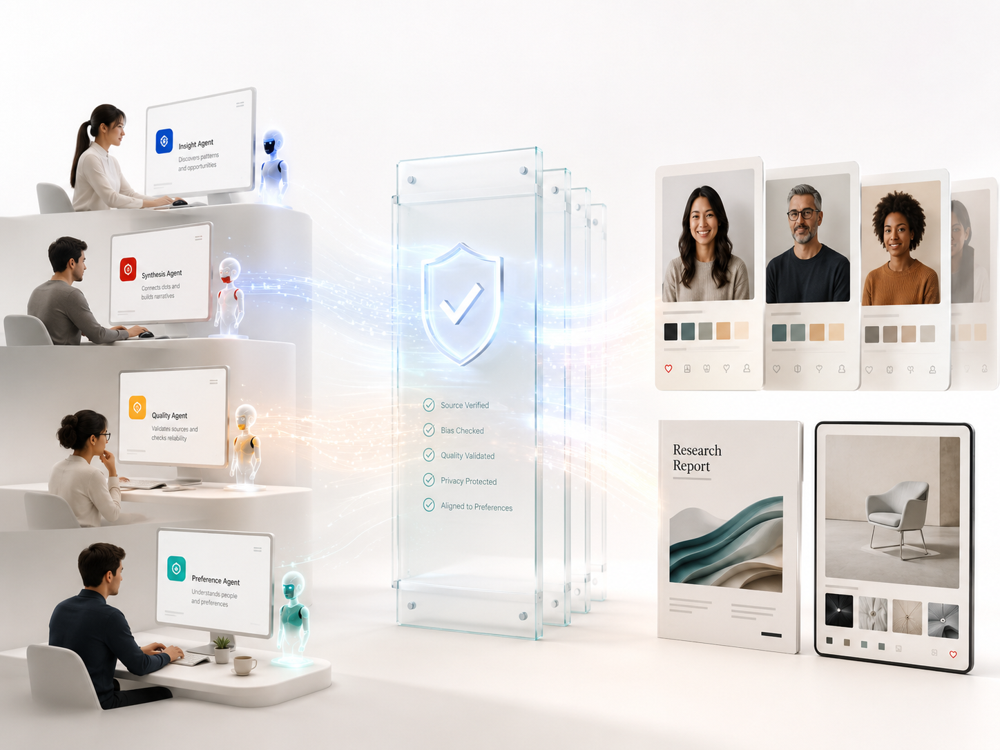
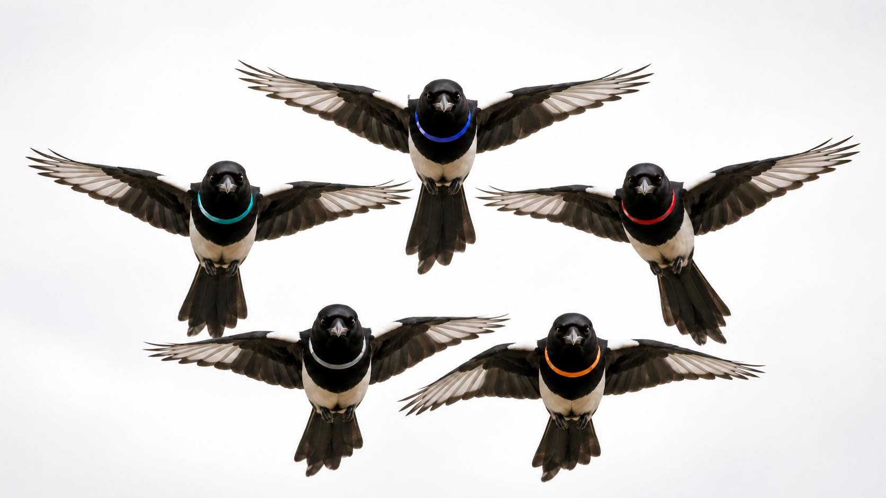

AI Persona Synthesis Research
시안 선호, 비선호 이유, 개선 방향을 Synthetic Audience에게 대규모로 묻는 조사 흐름을 통해 디자인 의사결정의 속도와 효율을 높입니다.
AI Persona Synthesis ResearchRoot Kernel
Root Kernel은 반복 선택 데이터와 이미지 취향 분석을 바탕으로, 기업 고객이 Synthetic Audience에게 광고·패키지·UI 시안에 대한 대규모 설문과 후속 질문을 빠르게 실행할 수 있는 AI 패널 리서치 시스템을 연구·개발합니다.

Structure
AI Persona Synthesis Research는 Root Kernel의 핵심 사업 영역입니다. Agent Technologies와 Hermes Agent Supports는 이 시스템을 만들고 검증하기 위한 내부 AI Agent 운영 체계입니다.
시안 선호, 비선호 이유, 개선 방향을 Synthetic Audience에게 대규모로 묻는 조사 흐름을 통해 디자인 의사결정의 속도와 효율을 높입니다.
AI Persona Synthesis Research사람과 AI Agent가 함께 소통하고, 토론과 검토를 거쳐 시스템을 안전하게 개발·검증하도록 돕는 협업 기술입니다.
Agent TechnologiesAI를 단순 호출형 도구가 아니라, 역할과 책임을 가진 작업 단위로 운영하기 위한 체계입니다.
Hermes Agent SupportsAI Operations
Root Kernel은 제품 개발과 운영을 역할 기반 AI Agent 작업으로 나누고, 작은 사람 팀이 방향 설정과 승인, 최종 판단을 유지한 채 복잡한 개발과 검증 흐름을 지속적으로 운영할 수 있게 만듭니다.
명세 기반 에이전트 서버 거버넌스
자연어 요구사항을 명세, 정책, 승인, 실행 경계로 나누는 안전 거버넌스 시스템

Hermes 기반 에이전트 운영 모델
구현, 리뷰, 사용자 관점, 문서 정합성, UX 판단을 분담하는 여러 역할의 에이전트 운영 체계

취향·페르소나 합성 엔진
반복 선택 데이터를 바탕으로 AI와 심리계량학을 결합해 취향 공간을 모델링하고 가상 고객을 합성하는 엔진